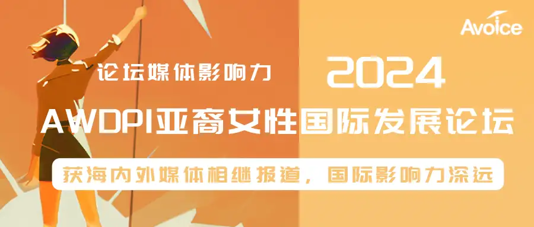

论坛发起机构——AWDPI简介
本次论坛由倡导关注海外亚裔女性生存困境、持续支持亚裔女性获得全面发展机会的 AWDPI (Asian Women Development Plan International) 亚裔女性国际发展计划主办。
AWDPI亚裔女性国际发展计划（Asian Women Development Plan International）是一家国际公益组织，致力于消除针对海外亚裔女性的歧视和性别暴力，并促进她们的赋能与发展，使海外亚裔女性在社会、经济、文化、教育等方面获得更多发展机会，帮助她们从弱势群体成长为推动社会进步的重要力量。
AWDPI在欧洲、北美和亚太的多个国家与地区开展工作，并在英国、比利时和美国设立了国家办公室团队，与各界建立了广泛的合作网络，包括联合国系统组织、各国政府相关部门、国际组织、跨国公司以及学术机构等。
论坛简要回顾
2024年11月23日至24日，时逢消除性别暴力16日行动前夕，“2024AWDPI亚裔女性国际发展论坛”在线上成功举办，为期两天，全程实时直播。
论坛期间，高朋满座，胜友如云。54名各界领袖拨冗出席、 “齐聚一堂”，同近千名与会嘉宾，与逾万名观众实现实时在线互动。借助直播，论坛得以围绕“Orange the World——共建无暴力的未来”“女性身份塑造新纪元”两大主题，通过学术演讲、圆桌讨论、论文评议和辩论赛四个单元，与世界各地关注亚裔女性发展的政府部门、学术机构、公益组织、专家学者、意见领袖和热心人士展开深度对话，分享和探讨在性别暴力、就业、创业、政治赋权、科技发展、气候变化、影视艺术等领领域中的亚裔女性议题。与会者金句频出，振聋发聩。山海同心共此时，天涯比邻意不移。
2024论坛媒体影响力总览
数百家中外媒体，726篇媒体报道，近40万次阅读量，触达逾200万名潜在受众。
本届论坛在规模、形式、课题和学术氛围上再创新高，议题有深度、有温度、有高度。海内外主流知名媒体竞相报道，报道秉持积极与正面态度和立场，聚焦诸多深度女性议题，记录精彩观点，辑录四大板块要闻，全面展示论坛风貌。新闻通稿发布国内媒体诸如网易新闻、FT中文网、人民教育网、中国时报网、中国教育新闻、大众导报、媒体界、新华热线、深圳导报、环球新闻等；发布国际媒体诸如美联社（AP news）、美通社（PR Newswire）、Benzinga、雅虎财经（Yahoo! Finance）、圣地亚哥时报（Times of San Diego）、福克斯（FOX）等。中外媒体纷纷聚焦本届论坛，广泛传播了论坛内容，反响热烈。
中文媒体影响力——广泛传播 反响热烈
数百篇报道，近200万潜在受众，
全网浏览点击量高达303，314
中文媒体方面，2024年12月19日晚，国内一流媒体、中国五大门户网站之一的网易新闻转载当日美通社（PR Newswire）关于本届论坛的中文报道全文。拥有潜在受众112,640,000、日访问量逾一千万、月访问量上亿的头部媒体网易新闻助力本次论坛宣传推广，因此，新闻消息一经发布，迅速引爆点击量。企业观察网、Flipboard、FT中文网、中华网、中国时报网、人民经济网、中国快报等逾百家各大流量明星媒体关注转载报道。据悉，各媒体机构共计发布235篇中文媒体推文，高达303,314的浏览点击量，并且此浏览数字还在持续攀升。
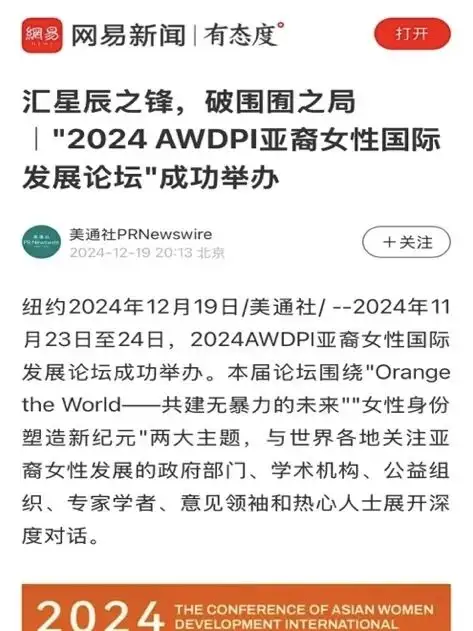
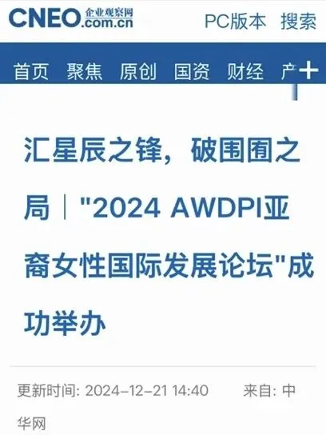
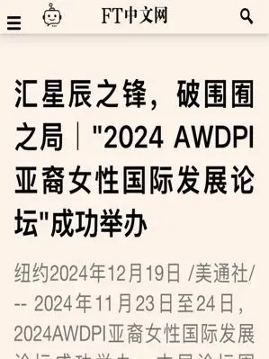
以下为部分媒体报道：
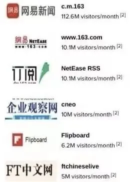
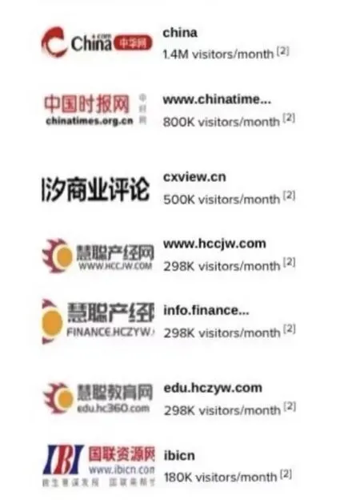
「让女性之声更响亮、更深远、更别具一格」
本届论坛吸引了众多媒体参与发声，报道被广泛转载，影响力辐射范围广，波及受众群体规模大，热度持续时间长，触达平均潜在受众近200万。
对多家新闻报道进行数据抓取和统计分析，形成以下的词云图。从图中，不难发现，报道涉及高频词汇有：女性身份塑造新纪元、连接力、深度对话等。从词云图关键词的展现，我们亦可以窥见论坛报道聚焦女性力量、关注“她”的赋能，探讨深入，多视角对话等，帮助受众深度了解论坛内容，充分回顾论坛精彩章节，为论坛以及我论坛举办方提供了展示机遇，树立了良好的机构品牌形象。
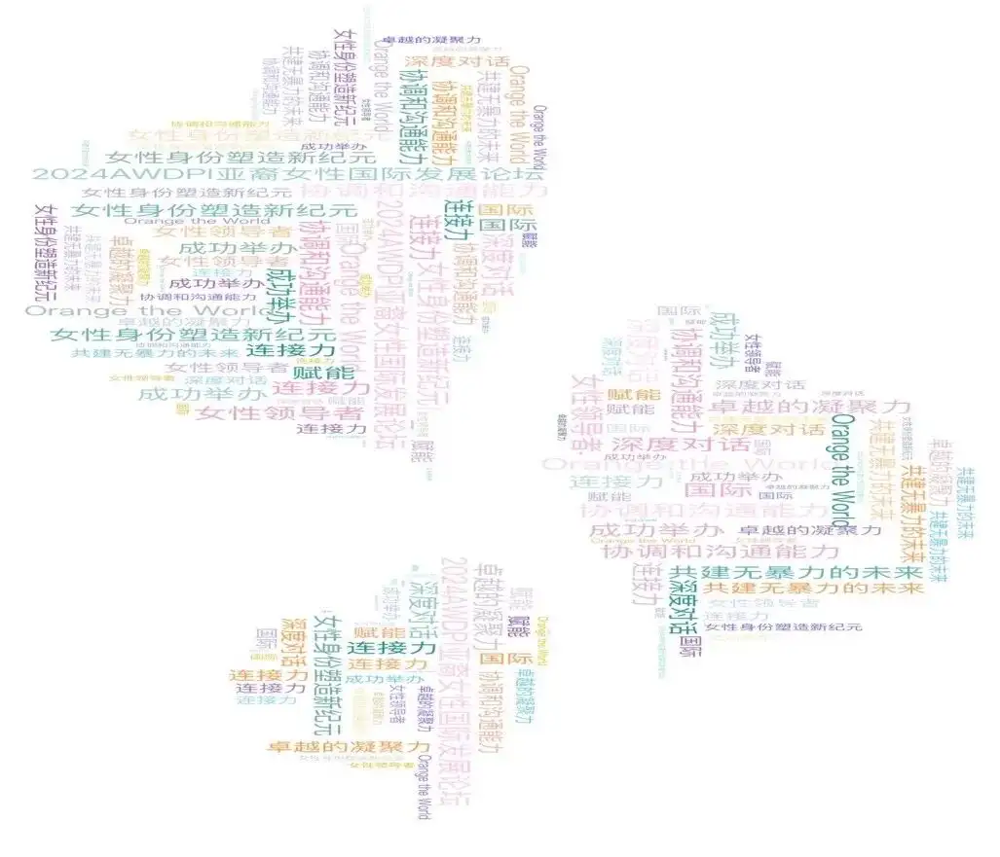
（词云图）
英文媒体影响力——辐射全球 声震海外
「491篇报道，43.54万潜在受众」
外文推广方面，本次论坛的消息由美通社（PR Newswire）全程发布，引发了全球媒体的广泛关注。来自多个国家和地区的全球知名主流媒体，对此次论坛进行了深入报道，共产生 491 篇精确匹配的新闻稿件，平均潜在受众多达43.54 万人。
数十个全球主流媒体平台聚焦本次论坛，包括具有广泛影响力的AP News（每月4,800万访问量）、Yahoo! Finance（每月4,650万访问量）和Benzinga（每月1,000万访问量）等。此外，KTLA、WFLA等国际知名广播和在线媒体也对论坛进行了重点报道，为论坛内容在全球范围内的传播提供了有力支持。
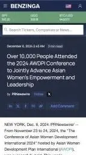
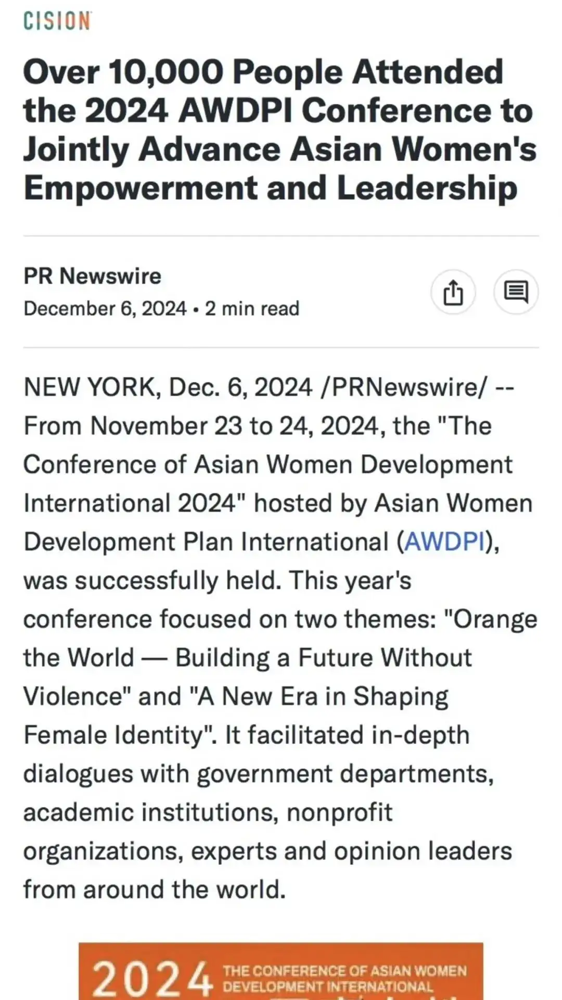
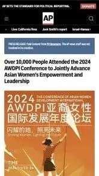
「10，000与会者外的更多观众」
此次论坛的媒体传播渠道丰富多元，涵盖报纸、广播媒体以及在线新闻等多种形式，为超1万名参会者之外的全球观众提供了多样的信息获取途径，成功将论坛的声音传递至更多群体。
论坛传播的一大亮点是多元的传播方式，通过视觉、听觉的多感官统合，使论坛核心内容成功吸引更多关注。多媒体形式的传播不仅延展了信息的传播链条，也提升了受众对“亚洲女性赋权”议题的理解与共鸣。
「5大行业的共同关注」
本次论坛受到来自媒体及信息行业的重点报道。来自媒体及信息行业的传播机构的报道高达89.6% ，同时，论坛议题 “亚洲女性赋权与领导力” 也吸引了金融、商业服务、娱乐等多个行业传播机构的积极响应。
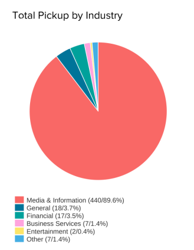
论坛内容传播的跨行业覆盖，为论坛议题和核心内容的传播和讨论注入了更多层次与视角。来自5大行业的关注聚焦体现了“亚洲女性赋权与领导力”议题的重要性以及在多领域内的广泛影响力，印证了这一全球性议题的广泛共鸣。
结语
726篇媒体报道，近40万次阅读量，触及逾200万名潜在受众。2024年亚洲女性发展与赋权计划国际论坛论坛（AWDPI）记录了一次“亚洲女性赋权”议题的全球共振。我们见证了超1万名参会者的深刻思想汇聚于此，更多的观众被吸引于此，在世界面前，共同探讨“共同推进亚洲女性赋权与领导力” 这一全球性议题。
我们期待明年的相遇，明年一定再相遇。
数据与部分图表来源：
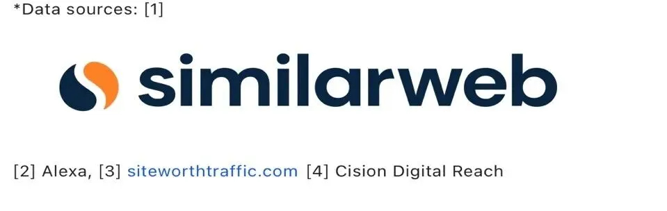
撰稿人｜Dolcia、李悦
审校｜Dolcia
排版｜池一诺